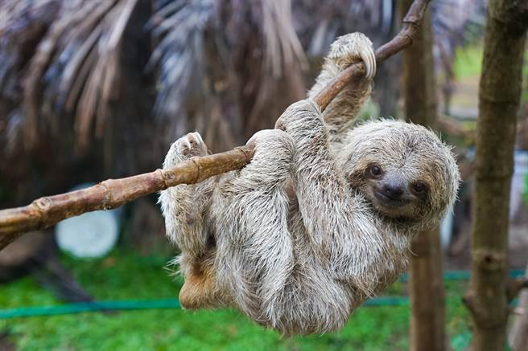
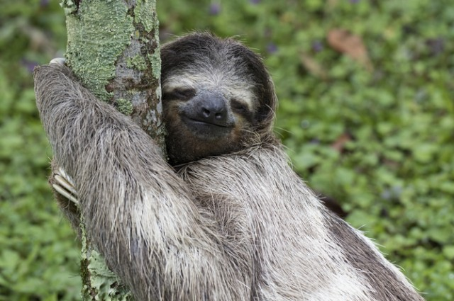
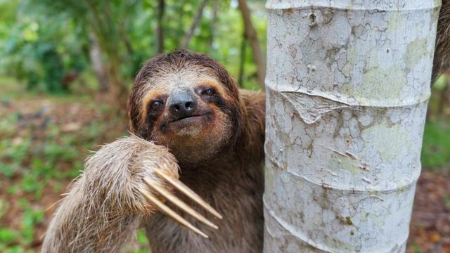
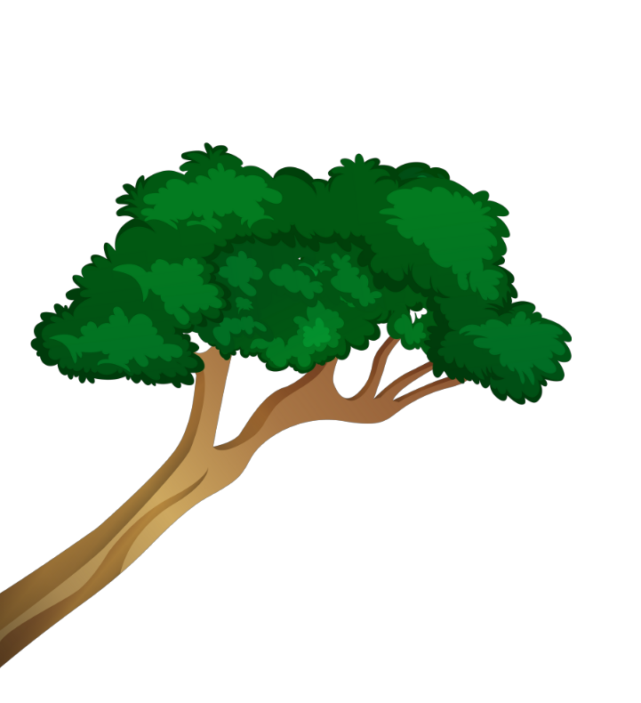

樹懶 Sloth

樹懶

樹懶

樹懶
Previous
Next

性格：
樹懶以其獨特的性格而聞名，通常被描述為極
其懶散和冷靜的動物。樹懶的性格特點主要體
現在其緩慢的行動和低能量消耗。牠們以極慢
的速度移動，花費大部分時間在睡眠中，每天
僅需攝取少量的食物。樹懶的動作極為緩慢，
連基本的日常活動都被視為負擔。這種懶散的
性格使牠們能夠節省能量，與環境保持和諧。
此外，樹懶還以其冷靜和平和的性格而聞名。
牠們通常表現出無憂無慮的態度，不易受到干
擾或激怒。樹懶在面臨危險或威脅時往往保持
冷靜，並利用其樹棲習性來避免衝突。牠們通
常不主動攻擊或咆哮，而是依靠其良好的保護
色和靜止的行為來躲避掠食者。總的來說，樹
懶以其極度懶散和冷靜的性格而聞名。牠們的
緩慢行動、低能量消耗和無憂無慮的態度使其
成為一個與世無爭的生物。樹懶的性格特點與
其樹棲的生活方式相互匹配，使牠們能夠在樹
冠中以平靜和安詳的方式生活。
食物：
樹懶的食物主要來自於樹葉和嫩枝，牠們以樹
葉為主要營養來源。樹懶具有特殊的消化系統
，適應了這種以樹葉為食的生活方式。牠們的
消化系統較為簡單，但發達的盲腸和大腸使其
能夠有效地消化纖維素和其他難消化的植物物
質。樹懶的食物選擇主要取決於樹葉的種類和
可用性。牠們偏好某些特定的樹種，如樟樹、
紫藤和闊葉樹等，這些樹種的葉子含有較高的
營養價值。樹懶通常會選擇樹冠中的嫩葉，這
些葉子較為柔軟且富含營養。樹懶的飲水需求
相對較低，大部分的水分來自於樹葉本身。樹
葉通常含有足夠的水分，使樹懶能夠滿足其水
分需求。總的來說，樹懶以樹葉為主要食物來
源，並依賴其特殊的消化系統來處理植物物質
。樹懶對於特定樹種和樹冠中的嫩葉有較高的
偏好。牠們的飲水需求相對較低，主要來自於
食物中所含的水分。
外表特徵＆外觀：
樹懶是一種慢動作且樹棲的哺乳動物，其外表
特徵和外觀與其獨特的生活方式密切相關。樹
懶擁有圓胖的身體，長而絨毛覆蓋的毛皮。牠
們的外觀常呈現棕色、灰色或綠色，這使其在
樹木上具有很好的保護色。樹懶有一個扁平的
面部，擁有大而圓的眼睛，這使牠們具有良好
的視野，以在樹上找尋食物和避免掠食者。牠
們的四肢相當長且強壯，前肢比後肢更長，並
有強大的鉤爪，能夠輕鬆地攀爬和懸掛在樹枝
上。樹懶的外表特徵與其懶散的生活方式緊密
相關。牠們的身體適應了懸掛在樹上的生活，
這種生活方式讓牠們在樹間緩慢地移動。樹懶
以一種極為緩慢的速度移動，牠們每天只會花
費很少的時間在覓食和排便上，其餘的時間則
大部分都在睡覺。樹懶的慢動作行為不僅有助
於節省能量，還有助於避免掠食者的偵測。總
體而言，樹懶的外表特徵和外觀與其樹棲的生
活方式相互配合。圓胖的身體、長毛皮、大眼
睛和強壯的鉤爪都使樹懶能夠輕鬆地在樹枝上
移動和生存。這些特徵還使樹懶具有出色的保
護色和視野，使其能夠適應樹上的環境並避免
掠食者的威脅。
分佈＆數量：
樹懶主要分布在中美洲和南美洲的熱帶雨林地
區，是這些地區的典型居民之一。根據目前的
估計，樹懶的數量相對較難確定，因為牠們生
活在森林中的樹冠層，很難直接觀察和計算其
數量。然而，根據研究和保育組織的估計，樹
懶的數量正在減少，並面臨著生存威脅。棲息
地破壞、森林伐採、非法狩獵和非法貿易是導
致樹懶數量減少的主要因素。這些活動導致了
樹懶棲息地的喪失和碎片化，使牠們面臨更大
的生存壓力。然而，由於樹懶在森林中的高度
特化和獨特的生活方式，其分布範圍相對保護
較好的保護區可能仍然擁有穩定的樹懶族群。
總的來說，樹懶主要分布在中美洲和南美洲的
熱帶雨林地區。由於棲息地破壞和其他人為因
素的影響，樹懶的數量正在減少，需要進一步
的保護和保育努力來確保其生存和繁衍。
生活型態＆習性：
樹懶以其獨特的生活型態和習性而聞名。牠們
是一種樹棲性動物，主要生活在熱帶雨林的樹
冠層中。樹懶的生活十分緩慢，牠們的行動速
度極慢，甚至可以花上一整天的時間只移動數
米。這是因為樹懶的身體結構和代謝率使牠們
能夠節省能量，以適應稀疏的營養和樹葉的消
化。牠們以樹葉為主要食物，並以樹葉提供的
營養維持生活。樹懶的身體特化也使其適應了
樹棲生活。牠們的前肢非常長且強壯，有利於
攀爬和抓握樹枝。牠們的後肢較短且弱，並且
特別適合懸掛和懸垂在樹枝上。此外，樹懶的
指甲也特化為鉤狀，使牠們能夠牢牢地抓住樹
枝，甚至可以倒掛在樹上睡覺。樹懶通常是獨
居的動物，牠們在樹上建立自己的領域，並且
非常少與其他樹懶交流。牠們一般是夜行性，
晚上活動並尋找食物，白天則大部分時間都在
睡覺。樹懶的睡眠時間非常長，可以睡達15到
20小時以上。這種睡眠模式也與其緩慢的新陳
代謝相關，有助於節省能量。總的來說，樹懶
的生活型態是緩慢和樹棲的，牠們以樹葉為食
，通常是獨居的動物。牠們特化的身體結構和
睡眠模式使牠們能夠在熱帶雨林中生活和繁衍
。
壽命：
樹懶的壽命約為20至40年。